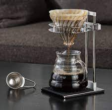

Receitas - V60
O cappuccino clássico italiano é uma combinação de café espresso e leite quente, coberto com espuma de
leite. Não se usa chocolate.

Ingredientes
20g de café
300ml de água
Filtro V60
Modo de Preparo
Escolha um café de qualidade superior
A proporção da medida é de aproximadamente 1 parte de café para 15 de água, ou 1:15. Isso quer dizer que
você vai usar 20g de café para cada 300ml de água.
A gramatura da moagem deve ser média para fina (na gramatura do açúcar cristal); ideal é usar grãos
frescos, moídos pouco antes de iniciar o bebida;
Escalde o filtro de papel -basta passar água por toda a extensão antes de acrescentar o café. Não se
esqueça de descartar a água depois;
Coloque o café moído no filtro e acrescente 60ml de água, molhando por igual todo o pó. Este método
conhecido por desgaseificação ou blooming, que serve para soltar todas as notas do grão em contato com a
água quente. Espere de 35 a 45 segundos.
Delicadamente, acrescente o restante da água em movimentos circulares, em intervalos de mais ou menos 10
segundos.Espere a água baixar antes de acrescentar mais.
Sirva em seguida!